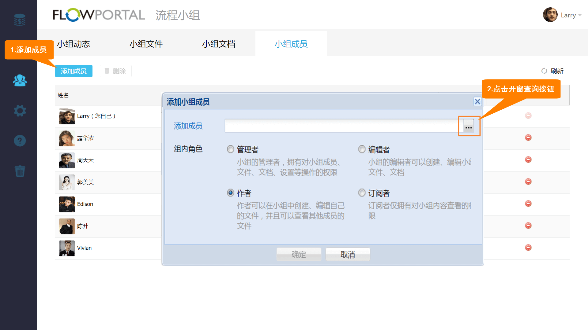
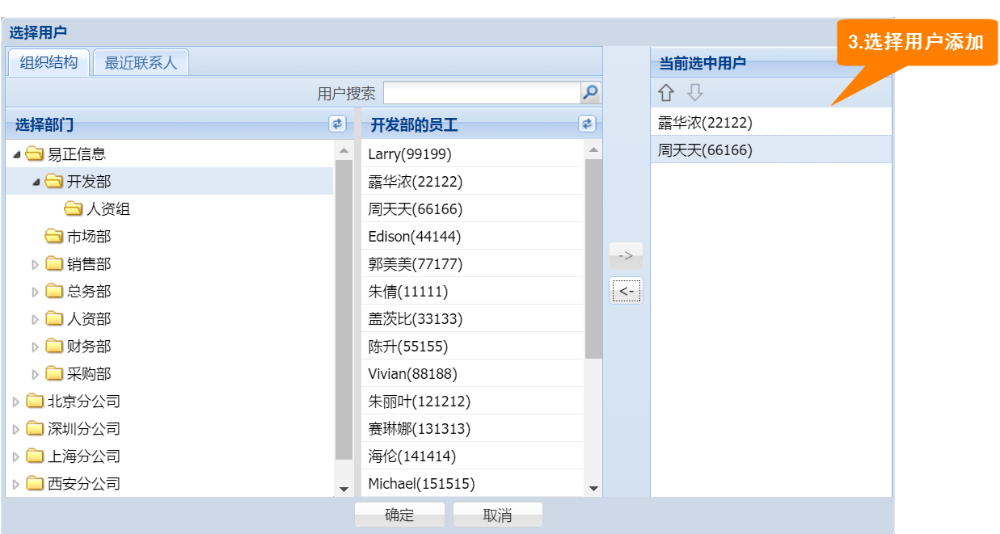
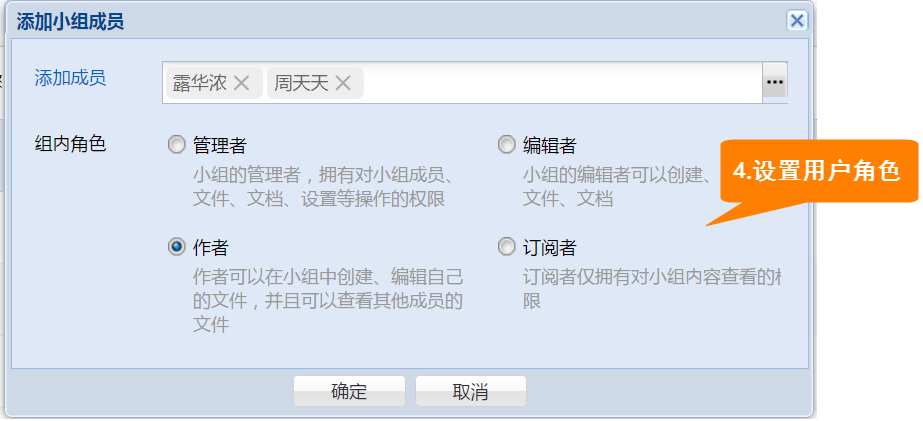
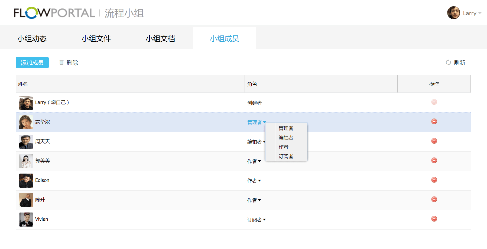

10.5 成员管理
进入【小组成员】界面，您可以进行成员添加、成员权限管理、成员删除的操作。
成员添加
点击【添加成员】按钮，在弹出窗口中的【添加成员】栏位，点击右侧的【开窗查询】按钮，选择要添加的小组成员进行添加，同时您可以设置新加成员的组内角色（管理者、编辑者、作者或订阅者）



成员权限管理
小组成员有4种角色权限：
管理者：小组的管理者，拥有对小组成员文件、文档、设置等操作权限
编辑者：小组的编辑者可以创建、编辑小组文件、文档
作者：作者可以在小组中创建、编辑自己的文件，并且可以查看其他成员的文件
订阅者：订阅者仅拥有对小组内容查看的权限
小组的创建者与管理者可以为小组成员配置权限
配置方法：选中成员角色，在弹窗中选择成员角色即可，如下图所示

Created with the Personal Edition of HelpNDoc: Free help authoring environment